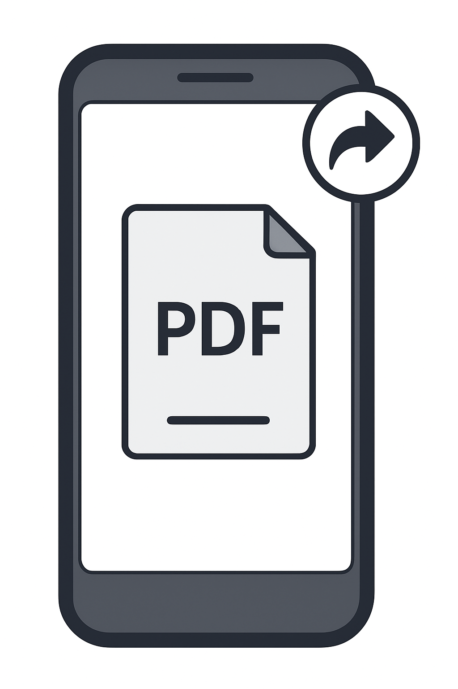
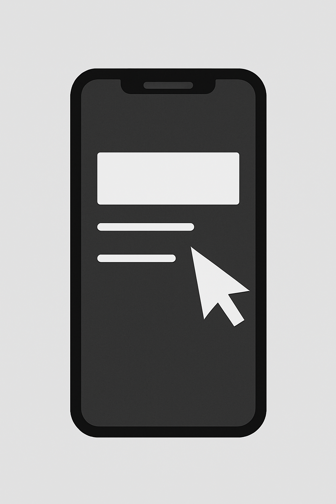

- Open your Mail app and tap the message with the PDF attachment.
- Tap the PDF to open it, then tap the share button (square with an arrow).
- Choose "Save to Files," select a location and tap "Save".
- Open the saved PDF in the Files app and type your information into the fields.
- Tap the Markup pen icon, tap the + sign, choose "Signature" and draw your signature with your finger.
- Tap Done (or Save) to finish, then share the signed PDF back via Mail.
Using an iPhone

